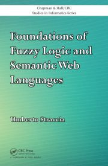

|
|
|||||||
|
|
||||||||
|
Topics of Interests:
Artificial
Intelligence
|
Information
Retrieval
|
Mathematics
|
My Web Page at CNR: www.cnr.it/people/umberto.straccia
My CV: Umberto
Straccia's
Curriculum Vitae et Studiorum
My Google Scholar page at https://scholar.google.com
My Scopus page at
https://www.scopus.com
Book:
Foundations of Fuzzy Logic and Semantic
Web Languages
Chapman & Hall/CRC Studies in
Informatics Series.
The book is a rigorous account of
the mathematical methods and tools about the Foundations of
Representing Fuzzy Information and Reasoning with it within
Semantic Web Languages. The development covers the three
main streams of Semantic Web languages: namely, triple
languages RDF & RDFS, Conceptual languages OWL,
OWL 2 and their Profiles (OWL EL, OWL QL and OWL RL), and
rule-based languages such as SWRL and RIF

Software:
The FuzzyDL System:Try the Fuzzy Description Logic
Reasoner fuzzyDL (paper)
Fuzzy OWL 2: See how to write
fuzzy ontologies in OWL 2 FuzzyDL-Learner A tool to
learn class descriptions from OWL 2 ontologies The SoftFacts System:Ontology
Mediated
Access to Databases. It supports top-k retrieval (paper).
The fuzzyRDF System:
Fuzzy RDFS reasoner. It supports top-k retrieval (paper).
The DL-Media System:An
Ontology
Mediated Multimedia Information Retrieval System (paper)
oMap:A
probabilisitc Ontology Alignemt Tool (paper) Keynotes
& Tutorials:
Straccia, Umberto. PN-OWL: A Two Stage
Algorithm to Learn Fuzzy Concept Inclusions from OWL
Ontologies. Seminar at University of Cape Town (UCT), South
Africa, October 2024. SlidesStraccia, Umberto and Casini,
Giovanni. Non-Classical
Knowledge Representation and Reasoning. Italian
National PhD Course on AI, 2024. Slides
Straccia, Umberto. Query-answering
from linked data. Tutorial Lecture at the
Autumn School IA2
on ARTIFICIAL INTELLIGENCE: MANAGING IMPERFECT AND
HETEROGENEOUS INFORMATION AND DATA, Le Lazaret, Sète,
France, October 30 - November 03, 2023. SlidesStraccia, Umberto. Fuzzy & Annotated Semantic Web
Languages. Tutorial Lecture at the 2020
Southern African Conference for Artificial Intelligence
Research (SACAIR 2020), South Africa, 22-26
February, 2021. Slides
Straccia, Umberto. Fuzzy
&
Annotated Semantic Web Languages. Invited
Talk
at the 2018
Artificial
Intelligence International Conference (A2IC 2018),
Barcelona, Spain, 1-3 November, 2018. Paper
Slides Presentation on Youtube Straccia, Umberto. Fuzzy
Semantic
Web Languages and Beyond. Invited
Talk at the 30th
International Conference on Industrial, Engineering, Other
Applications of Applied Intelligent Systems (IEA/AIE 2017),
Arras, France, June 27-30, 2017. Pdf
Slides Umberto Straccia and Fernando Bobillo. From
Fuzzy
to Annotated Semantic Web Languages. Tutorial Lecture at
the Reasoning
Web
2016 Summer School. Aberdeen, UK, 5 - 9 September, 2016.
Pdf Slides Umberto Straccia. All About Fuzzy Description Logics and
Applications. Tutorial Lecture at the Reasoning
Web
2015 Summer School. Berlin, Germany 31 July - 4 August,
2015. Pdf Slides Straccia, Umberto. Foundations of Fuzzy Logic and Semantic Web
Langugages. Invited Talk at the 9th Italian Convention on Computational Logic
(CILC-12), Rome, Italy, June 6-7, 2012. Pdf Umberto Straccia. Fuzzy Logic, Annotation Domains and Semantic
Web Languages. Invited Talk at the Fifth International Conference on Scalable
Uncertainty Management, SUM-2011, 2011. Paper.
Slides Umberto Straccia. Managing Uncertainty and Vagueness in
Description
Logics, Logic Programs and Description Logic Programs.
Tutorial Lecture at the Reasoning
Web 2008 Summer School. Venice, Italy 7th to 11th
September, 2008. Paper. Slides Thomas Lukasiewicz and
Umberto Straccia. Managing
Uncertainty and Vagueness in Semantic Web Languages. Tutorial
Lecture at the Twenty-Second
Conference on Artificial Intelligence (AAAI-07), 2007.
July 22-23, 2007, Vancouver, British Columbia, Canada. Pdf
Thomas Lukasiewicz and Umberto Straccia. Managing
Uncertainty
and Vagueness in Semantic Web Languages. Tutorial
Lecture
at the 4th European Semantic Web Conference (ESWC-07),
2007. June 3-7, 2007, Insbruck, Austria. Pdf
Current
Professional Activities:
Editorial
Board member of
Fuzzy
Sets and Systems (Area Editor)
(Elsevier) International
Journal
On Semantic Web and Information Systems International Journal of Hybrid Information
Technology (SERSC)
Advances
in
Artificial Intelligence (Hindawi
Publishing Corporation) Open Journal on
Semantic Web (Research
Publishing Online)International Journal of Knowledge Science
and Engineering (Inderscience Publishers)Association
Member ofCLAIRE (Member of
CLAIRE: Confederation of Laboratories for Artificial
Intelligence Research in Europe, 2018-)CINI
(Member of CINI: National Laboratory of Artificial
Intelligence and Intelligent Systems, Node CNR-DIITET,
2018-)RR (Member of the
Web Reasoning and Rule Systems (RR) Associations, 2012-)EUSFLAT
(Member of the European Society for Fuzzy Logic and
Technology. 2011-)MathFuzzLog
(Member of the Working Group on Mathematical Fuzzy Logic,
MathFuzzLog. 2007-)Conference Activities (PC memberships and Chairing) From 2025
onward (see all activities)IJCAI 2026 (The International
Joint Conference on Artificial Intelligence, Survey Track)KR 2026 (International
Conference on the Principles of Knowledge Representation and
Reasoning)TheWebConf 2026
(The Web Conference -formerly known as WWW Conference,
Semantics and Knowledge Track)ESWC 2026 (The Extended
Semantic Web Conference)UAI 2026 (The Conference on
Uncertainty in Artificial Intelligence)RuleML+RR 2026 (The
International Joint Conference on Rules and Reasoning)SUM 2026 (17th International
Conference on Scalable Uncertainty Management)DL 2026 (39th
International Workshop on Description Logics)IJCAI 2025 (The International
Joint Conference on Artificial Intelligence, Survey Track)KR 2025 (22nd International
Conference on the Principles of Knowledge Representation and
Reasoning)ECAI
2025 (Senior Program Committee Member, The European
Conference on Artificial Intelligence)ESWC 2025 (The Extended
Semantic Web Conference)RuleML+RR 2025 (The
International Joint Conference on Rules and Reasoning)UAI 2025 (The Conference on
Uncertainty in Artificial Intelligence)FuzzIEEE 2025 (The IEEE
International Conference on Fuzzy Systems)EUSFLAT 2025 (The Conference
of the European Society for Fuzzy Logic and Technology)DL 2025 (38th
International Workshop on Description Logics)JELIA 2025
(19th European Conference on Logics in Artificial
Intelligence)IFSA-NAFIPS 2025
(World Congress of the International Fuzzy Systems
Association and Annual Conference of the North American
Fuzzy Information Processing Society
Other Activities Member of the Italian National Agency
for the Evaluation of Universities and Research institutes
(ANVUR), Committee GEV01 (Computer Science), Research
Quality Assessment (VQR) of years 2015-2019. June 2020 -
June 2022.